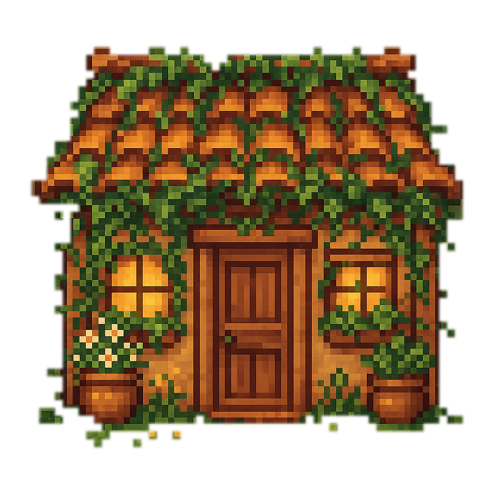
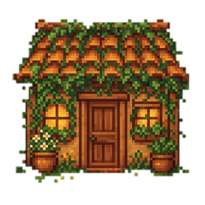
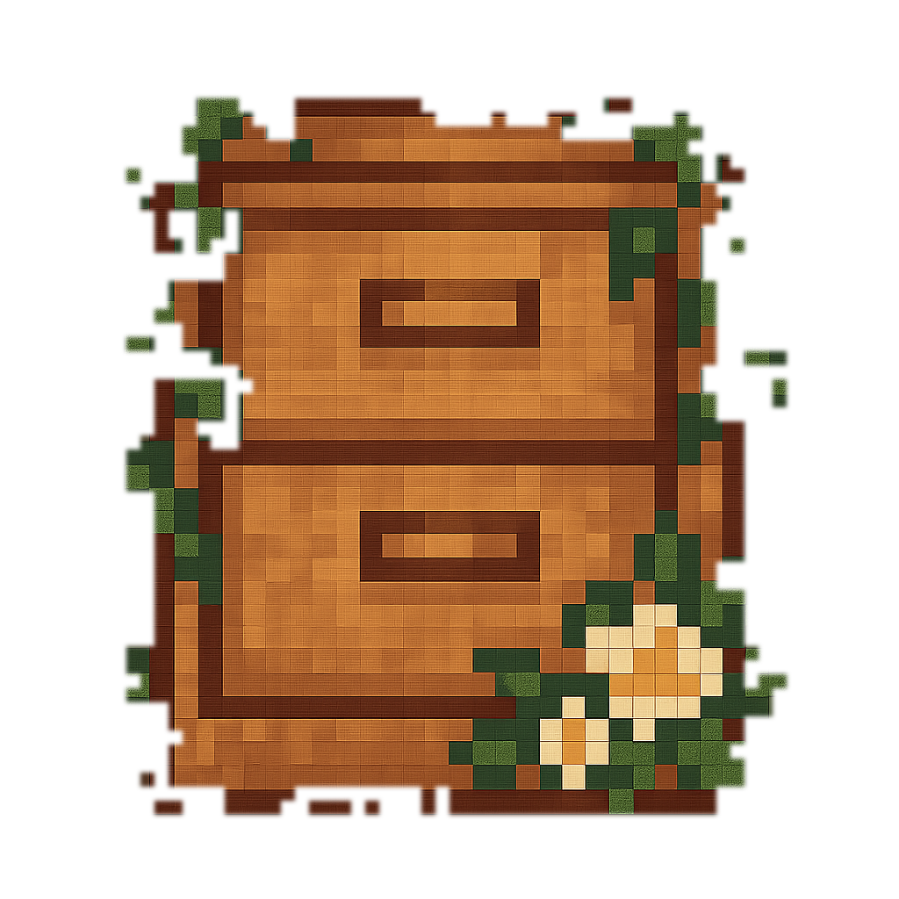
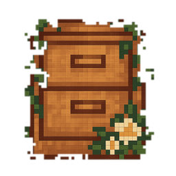
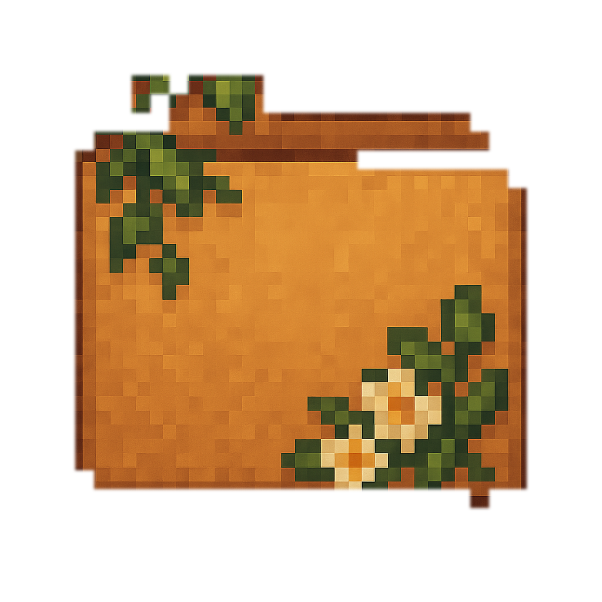
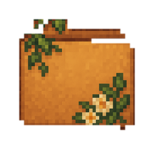
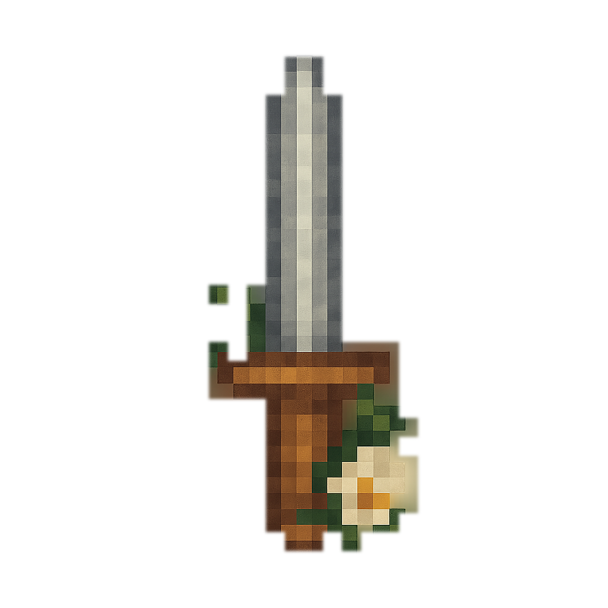
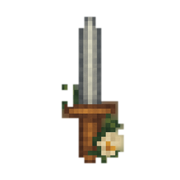
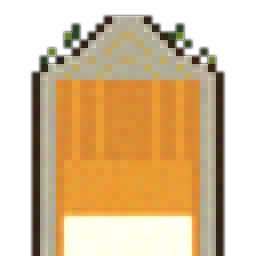
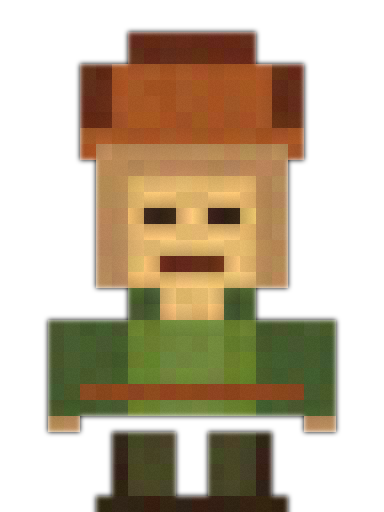

Art direction pivot: the soft-rendered 1024² originals (background removed via a matte, below) are the in-game art for these five objects. The crisp recovered/quantized sprites further down are kept as a reference for how the recovery step works, not as shipped art.
28 colors extracted from the source icons (indices 0-27) plus 4 hand-picked cool curated colors appended at the end (28-31: steel gray, bone/moonlight white, pale ghost blue, cool shadow blue-gray) — the extracted set is entirely warm browns/greens/creams and has nothing a moonlit or spectral subject could use.








soften() applied to the recovered cabin_64 sprite, next to the original cabin.png — the target was for these to read as the same soft-chunky style.




